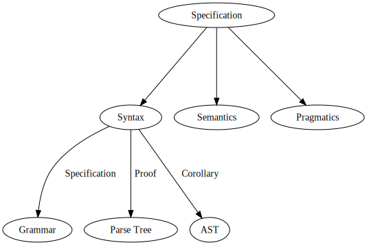
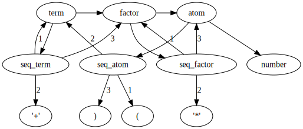

Software and Programming Language Theory
Notation and proof assistants
Formal syntax analysis
Macros as a part of syntax
Course page: https://maxxk.github.io/programming-languages/
Contact author: maxim.krivchikov@gmail.com
Programming language specification

BNF formally
BNF has a graph structure (actually, a directed hypergraph with per-edge ordered destination nodes). Parse tree is a tree derived from the graph (when you encounter a cycle, vertex is duplicated).

term ::= factor | term '+' factor
factor ::= atom | factor '*' atom
atom ::= number | '(' term ')'(3+2)*4+1Mechanization
class HashEntry
{
private:
int key;
int value;
public:
HashEntry(int key, int value)
{
this->key = key;
this->value = value;
}
int getKey() { return key; }
int getValue() { return value; }
};
const int TABLE_SIZE = 128;
class HashMap
{
private:
HashEntry **table;
public:
HashMap()
{
table = new HashEntry*[TABLE_SIZE];
for (int i = 0; i < TABLE_SIZE; i++)
table[i] = NULL;
}
int get(int key)
{
int hash = (key % TABLE_SIZE);
while (table[hash] != NULL && table[hash]->getKey() != key)
hash = (hash + 1) % TABLE_SIZE;
if (table[hash] == NULL)
return -1;
else
return table[hash]->getValue();
}
void put(int key, int value)
{
int hash = (key % TABLE_SIZE);
while (table[hash] != NULL && table[hash]->getKey() != key)
hash = (hash + 1) % TABLE_SIZE;
if (table[hash] != NULL)
delete table[hash];
table[hash] = new HashEntry(key, value);
}
~HashMap()
{
for (int i = 0; i < TABLE_SIZE; i++)
if (table[i] != NULL)
delete table[i];
delete[] table;
}
};
Notation
- A → B
- function from type A to type B
- (a : A) → B(a)
- dependent function (dependent product) mapping an element a of type A to representative B(a) of
family B : A → Type - A + B
- sum type (either an element of A or element of B)
inl : A → A + B
inr : B → A + B - A × B
- product type (ordered pair of elements from A and B)
(a, b) : A × B - (a : A) × B(a)
- dependent sum, an ordered pair of element a from A and element from representative B(a) of
family B : A → Type
Inductive types
term ::= factor | term '+' factor
factor ::= atom | factor '*' atom
atom ::= number | '(' term ')'Abstract syntax tree for the grammar is defined by three mutually inductive types:
Term = TFactor (f : Factor) | TSum (t : Term) (f : Factor)
Factor = FAtom (a : Atom) | FProduct (f : Factor) (a : Atom)
Atom = ANumber (n : Number) | AGroup (t : Term)Pattern matching
An interpreter for an abstract syntax tree from previous slide is defined with pattern matching (case analysis) on inductive type constructors:
interpretTerm : Term → Number
interpretTerm (TFactor f) = interpretFactor f
interpretTerm (TSum t f) = (interpretTerm t) + (interpretFactor f)
interpretFactor : Factor → Number
interpretFactor (FAtom a) = interpretAtom a
interpretFactor (FProduct f a) = (interpretFactor f) * (interpretAtom a)
interpretAtom : Atom → Number
interpretAtom (ANumber n) = n
interpretAtom (AGroup t) = interpretTerm t
Proof assistants: Coq and Agda
Coq and Agda are the proof assistants based on dependently-typed lambda calculus (remember the previous semester).
Coq
ML-like syntax.
Homepage: https://coq.inria.fr
Textbook: http://adam.chlipala.net/cpdt/
Quickstart (in Russian): https://habrahabr.ru/post/182442/
Another short texbook (in Russian): http://lpcs.math.msu.su/~krupski/download/coq_pract.pdf
Agda
Haskell-like syntax.
Homepage: http://wiki.portal.chalmers.se/agda/pmwiki.php?n=Main.HomePage
Introduction paper: http://www.cse.chalmers.se/~ulfn/papers/afp08/tutorial.pdf
Example (in Russian): https://habrahabr.ru/post/148769/
Coq and Agda
In Coq and Agda all definable functions are (under the normal circumstances) total, which means:
- The function will accept any input of the specified type, errors like Haskell's "non-exhaustive patterns" are not possible:
helper :: Integer -> [Integer] -> [Integer] -> [(Integer,Integer)] -> [Integer]
helper n [] (v) _ = []
helper n (x:y:xs) (v) (c:cs) =
if (chinese3 (b:c:cs) == n)
then (x:v)
else helper n (xs) (x:v) ((n `mod` y,y):c:cs)
where b =(n `mod` x,x)
-- helper 10 primes [] [] ⟶ error: Non-exhaustive patterns in function helper.The function will terminate for any input, infinite recursion is not allowed:
helper a b c d = helper a (a:b) c d
Agda examples
Inductive datatype is defined by a set of constructors. Note that indentation is significant (like in Python and Haskell)
data Nat : Set where
zero : Nat
succ : Nat → NatFunction on inductive types are defined by the means of pattern matching.
plus : Nat → Nat → Nat
plus zero m = m
plus (succ n) m = succ (plus n m)Agda examples
Dependent product indexed type familiy. Note that the implicit argument n to cons is enclosed in braces.
data Vec (A : Set) : Nat → Set where
[] : Vec A zero
cons : {n : Nat} → A → Vec A n → Vec A (succ n)
cons zero [] -- Vector with a single element (0)
head : {A : Set}{n : Nat} → Vec A (succ n) → A
head (cons x xs) = xCoq examples
Inductive data types. Indentation is not significant in Coq. Statements are terminated by dot .
Inductive nat : Type :=
| O : nat
| S : nat → nat.There are some different keywords for definitions (Definition, Inductive, Fixpoint, Program Definition). Functions are defined like in lambda-calculus, pattern matching is possible with match expression:
Fixpoint plus (a b : nat) : nat :=
match a with
| O ⇒ b
| S a' ⇒ S (plus a' b)
end.Coq examples
Dependent type family. As in Agda, implicit arguments are written inside braces, explicit dependent arguments are written insied the round brackets.
Inductive Vector (A : Set) : nat → Set :=
| Nil : Vector A O
| Cons : forall {n : Nat}, A → Vector A n → Vector a (S n).Definition head' A n (vec : Vector A n) :=
match vec in (Vector A n) return
(match n with O ⇒ unit | S _ ⇒ A end) with
| Nil ⇒ tt
| Cons h _ ⇒ h
end.
Definition head A n (vec : Vector A (S n)) : A := head' vec.Formal syntax analysis
Parser is a function which implements syntax analysis.
Suppose we have defined a syntax as a grammar G and an abstract syntax tree and implemented a parser P.
P : String → AST + SyntaxError
How can we make sure that our parser will:
- accept all strings from G-defined language.
- not accept any string outside of G-defined language.
- will terminate for every finite input.
Couldn't we just write a parser in a proof assistant?
From the previous class: left recursion.
term ::= factor | term '+' factor
factor ::= atom | factor '*' atom
atom ::= number | '(' term ')'x+1 ⟶ ⟂(try to parse a term, x is not a factor so it must be a term and now we have a cycle)
Danielsson. Total Parser Combinators (2010)
Main idea is: use the lazy computation. Total, dependently-typed programming languages may represent infinite lazy computations as a corecursive type. After the parsing process is represented as tree with some infinite-depth paths, make a breadth-first search of successful parse result.
data List (A : Set) : Set where
[] : List A
_::_ : A → List A → List A
data Colist (A : Set) : Set where
[] : Colist A
_::_ : A → ∞ (Colist A) → Colist A
♯ : {A : Set} → A → ∞ A
♭ : {A : Set} → ∞ A→ A
Danielsson N.A. Total parser combinators // Proceedings of the 15th ACM SIGPLAN international conference on Functional programming - ICFP ’10. ACM Press, 2010. P. 285–285.
Source and paper is available at: http://www.cse.chalmers.se/~nad/publications/danielsson-parser-combinators.html
Danielsson. Total Parser Combinators (2010)
map : ∀{A B} → ( A → B) → Colist A → Colist B
map f [ ] = [ ]
map f (x::xs) = f x :: ♯ map f (♭xs)mutual
-- The index is true if the corresponding language contains the
-- empty string (is nullable).
data P : Bool → Set where
fail : P false
empty : P true
tok : Tok → P false
_∣_ : ∀ {n₁ n₂} → P n₁ → P n₂ → P (n₁ ∨ n₂)
_·_ : ∀ {n₁ n₂} → P n₁ → ∞⟨ not n₁ ⟩P n₂ → P (n₁ ∧ n₂)
-- Coinductive if the index is true.
∞⟨_⟩P : Bool → Bool → Set
∞⟨ true ⟩P n = ∞ (P n)
∞⟨ false ⟩P n = P nDanielsson. Total Parser Combinators (2010)
Example from: http://www.cse.chalmers.se/~nad/publications/danielsson-parser-combinators/TotalParserCombinators.Examples.Expression.html#233
module Monadic where
mutual
term = factor
∣ ♯ term >>= λ e₁ →
tok '+' >>= λ _ →
factor >>= λ e₂ →
return (e₁ + e₂)
factor = atom
∣ ♯ factor >>= λ e₁ →
tok '*' >>= λ _ →
atom >>= λ e₂ →
return (e₁ * e₂)
atom = number
∣ tok '(' >>= λ _ →
♯ term >>= λ e →
tok ')' >>= λ _ →
return eAnd what about proofs?
Simplification
-- f <$> fail → fail
-- f <$> return x → return (f x)
-- fail ∣ p → p
-- p ∣ fail → p
-- token >>= p₁ ∣ token >>= p₂ → token >>= (λ t → p₁ t ∣ p₂ t) (*)
-- ...
simplify₁ : ∀ {Tok R xs} (p : Parser Tok R xs) →
∃₂ λ xs (p′ : Parser Tok R xs) → p ≅P p′Completeness
-- A proof showing that all functions of type List Bool → List R can
-- be realised using parser combinators (for any R, assuming that bag
-- equality is used for the lists of results).
parser⇒fun : ∀ {R xs} (p : Parser Bool R xs) {x s} →
x ∈ p · s ⇿ x ∈ parse p s
maximally-expressive :
∀ {R} (f : List Bool → List R) {s} →
parse (grammar f) s ≈[ bag ] f sKoprowski, Binsztok. TRX: A Formally Verified Parser Interpreter
Main idea: like in original PEG parsers, disallow direct and indirect left-recursive grammars. Patented algorithm :)
Definition wf_analyse (exp : pexp) (wf : PES.t) : bool :=
match exp with
| empty ⇒ true
| range ⇒ true
| terminal a ⇒ true
| anyChar ⇒ true
| nonTerminal p ⇒ is_wf (production p) wf
| seq e1 e2 ⇒ is_wf e1 wf ∧ (if e1 − [gp] → 0 then is_wf e2 wf else true) | choice e1 e2 ⇒ is_wf e1 wf ∧ is_wf e2 wf
| star e ⇒ is_wf e wf ∧ (negb (e − [gp] → 0))
|note ⇒is_wf e wf
| id e ⇒ is_wf e wf
end.
Koprowski A., Binsztok H. TRX: A Formally Verified Parser Interpreter // Logical Methods in Computer Science / ed. Gordon A. 2011. Vol. 7, № 2.
Note: some approaches exist to enable left-recursive PEG parsing, I must have references somewhere :)
Medeiros S., Ierusalimschy R. A parsing machine for PEGs // Proceedings of the 2008 symposium on Dynamic languages - DLS ’08. 2008. P. 1–12.
TRX: A Formally Verified Parser Interpreter
Program Fixpoint parse (T : Type) (e : PExp T | is grammar exp e) (s : string)
{measure (e , s ) ≻ } : {r : ParsingResult T | ∃ n , [ e , s ] ⇒ [ n , r ] }See also
- Uustalu, Tarmo, Firsov, Denis. Certified Parsing of Regular Languages // Certified Programs and Proofs. Springer International Publishing, 2013. P. 98–113.
- Jourdan J.-H., Leroy X., Pottier F. Validating LR(1) Parsers // Proceedings of the 21st European Symposium on Programming. 2012. Vol. 7211. P. 397–416.
- Bernardy, Jean-Philippe, Jansson, Patrik. Certified Context-Free Parsing: a Formalisation of Valiant's Algorithm in Agda: Preprint. Chalmers University of Technology, University of Gothenburg, Sweden, 2016. 27 p.
- Sjöblom, Thomas Bååth. An Agda proof of the correctness of Valiant’s algorithm for context free parsing: MSc. Göteborg University: Chalmers University of Technilogy, University of Gothenburg, 2013. 63 p.
Macros
Macro (macroinstruction) — is a rule of generation a set of instructions in compile-time.
Different kinds of macros may be related to both syntax and static semantics of programming language.
Macroassemblers revisited
Macros are substituted before the assembly time.ForLp macro LCV, Start, Stop
ifndef $$For&LCV&
$$For&LCV& = 0
else
$$For&LCV& = $$For&LCV& + 1
endif
mov ax, Start
mov LCV, ax
MakeLbl $$For&LCV&, %$$For&LCV&
mov ax, LCV
cmp ax, Stop
jgDone $$Next&LCV&, %$$For&LCV&
endm
Next macro LCV
inc LCV
jmpLoop $$For&LCV&, %$$For&LCV&
MakeLbl $$Next&LCV&, %$$For&LCV&
endmForLp I, 0, 15
ForLp J, 0, 6
ldax A, I, J ;Fetch A[I][J]
mov bx, 15 ;Compute 16-I.
sub bx, I
ldax b, bx, J, imul ;Multiply in B[15-I][J].
stax x, J, I ;Store to X[J][I]
Next J
Next IPreprocessors
Preprocessor is a program which operates on input data for some other program. Preprocessors may be used to provide primitive macro facilities.
Preprocessor : String → String
C preprocessor
#include <math.h>
#ifndef _WINDOW_H
#define _WINDOW_H
#endif
#define MAX(a,b) ((a) > (b) ? (a) : (b))
#if VERBOSE >= 2
print("trace message");
#endif
#if !(defined __LP64__ || defined __LLP64__) || defined _WIN32 && !defined _WIN64
#error 32-bit systems not supported
#else
// we are compiling for a 64-bit system
#endifC preprocessor
#define xstr(s) str(s)
#define str(s) #s
#define foo 4
str (foo) // outputs "foo"
xstr (foo) // outputs "4"
#define DECLARE_STRUCT_TYPE(name) typedef struct name##_s name##_t
DECLARE_STRUCT_TYPE(g_object);
// Outputs: typedef struct g_object_s g_object_t;(It is even possible to write limited recursive programs in C preprocessor by itself: https://github.com/pfultz2/Cloak/wiki/Is-the-C-preprocessor-Turing-complete%3F)
M4 / T4
Some external preprocessors feature complex programming languages for template transformations:
public class Decorator: <#= interface.FullName #>
{ // …
<#
foreach(Member member in interfaceType.Members)
WriteMember(member);
#>
}LISP Reader Macros
In LISP there are different kinds of macros: ordinary macros which transfrom abstract syntax tree and reader macros which transform a string to an abstract syntax tree.
ReaderMacro : String × (genericReader : String → AST) → AST
In LISP reader macros are implemented by means of modifying read table: a mapping from characters to further actions.
ReadTable : Char → (String → AST)
Reader : (readtable : ReadTable) → (nexttable : Char → ReadTable) → String → AST
See an example at: https://gist.github.com/chaitanyagupta/9324402
TeX
TeX is actually built around reader macros:
https://en.wikibooks.org/wiki/TeX/catcode
0 = Escape character, normally \
1 = Begin grouping, normally {
2 = End grouping, normally }
3 = Math shift, normally $
4 = Alignment tab, normally &
5 = End of line, normally <return>
6 = Parameter, normally #
7 = Superscript, normally ^
8 = Subscript, normally _
9 = Ignored character, normally <null>
10 = Space, normally <space> and <tab>
11 = Letter, normally only contains the letters a,...,z and A,...,Z. These characters can be used in command names
12 = Other, normally everything else not listed in the other categories
13 = Active character, for example ~
14 = Comment character, normally %
15 = Invalid character, normally <delete>% \makeatletter substitute:
\hello@ % is two tokens \hello @ by default
% make @ an ordinary letter
\catcode`\@=11\relax
\hello@ % is a single token \hello@LISP Macros
Macro : AST → AST
Macros transform program AST at some stage before the evaluation.
Example: short-circuit evaluation
C:
A()
&& B() // only run if A returned non-zero
&& C(); // only run if both A and B returned non-zero
and(A(), B(), C()) // will evaluate A(), B() and C() before going inside and LISP:
(defmacro && (expr1 &rest exprs)
`(if ,expr1
(&& ,@exprs)
nil))
(&& (A) (B) (C))LISP Macros
Complex example: SQL-like queries in LISP:
https://marijnhaverbeke.nl/postmodern/s-sql.html
(:select (:+ 'field-1 100) 'field-5
:from (:as 'my-table 'x)
:left-join 'your-table :on (:= 'x.field-2 'your-table.field-1)
:where (:not-null 'a.field-3))LISP Macros
The evaluation of macro invocation is split in two stages: expansion-time (first stage, in compiler) and run-time (second stage, in program).
Macro code starts running in expansion-time.
The run-time is separated from expansion-time with quotation operators:
'— quote`— quasiquote, allowing for unquoting with operator,
Examples:
(f a b c)– call functionfwith argumentsa,b,cand replace macro invocation node in AST with the result'(f a b c)– return list (AST) with symbolsf,a,b,cas its elements`(f a b ,(+ 1 2))– evaluate(+ 1 2)at expansion time and return list(f a b 3)
What the code from the previous example does?
`(if ,expr1
(&& ,@exprs)
nil))Macros in Rust
macro_rules! vec {
( $( $x:expr ),* ) => {
{
let mut temp_vec = Vec::new();
$(
temp_vec.push($x);
)*
temp_vec
}
};
}let x: Vec<u32> = vec![1, 2, 3];
// expanded:
let x : Vec<u32> = {
let mut temp_vec_1234 = Vec::new();
temp_vec.push(1);
temp_vec.push(2);
temp_vec.push(3);
temp_vec
}Homework assignments
Task 4.1 (6*) Implement Danielsson's Total Parser Combinators in Coq.
Task 4.2a* Write (manually) an extensible parser for LISP-like symbolic expressions (subset of "R7RS small" Scheme specification). Whitespace, identifier and number specifications are omitted as a trivial exercise.
<datum> ::= <atom> <optional whitespace> | <list> <optional whitespace>
<atom> ::= <identifier> | <number> | <string>
<string> ::= '"' <string element>* '"'
<string element> ::= <any character except " and \> | '\"' | '\\'
<list> ::= "(" <datum> ")"Homework assignments
Task 4.2b** Implement reader macros for a subset of a context-free grammar as an interpreter from s-expressions to parser extension. It'll be easier to implement in some lanugage featuring eval command (like JavaScript, Python or LISP family)
(reader-macro <start-string> <stop-string> <grammar>)
; Example:
(reader-macro "#" "#" (float decimal-digits
(optional "." (optional decimal-digits))
(optional "e" (either "+" "-" "") decimal-digits)))
#1.5e11# ⟶ (float "1" ("." ("5")) ("e" ("") "11"))Task 4.2c* Write a reader macro for infix arithmetical expressions (addition, multiplication, brackets).